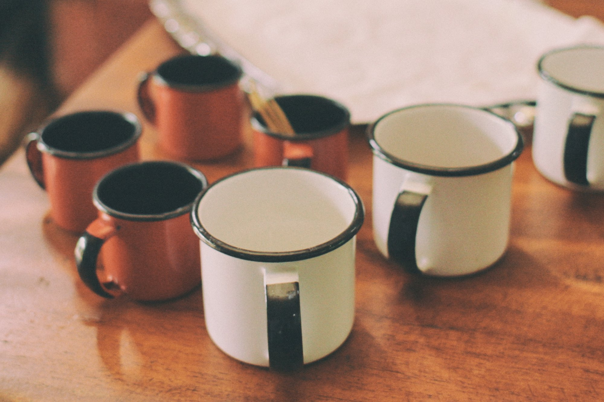
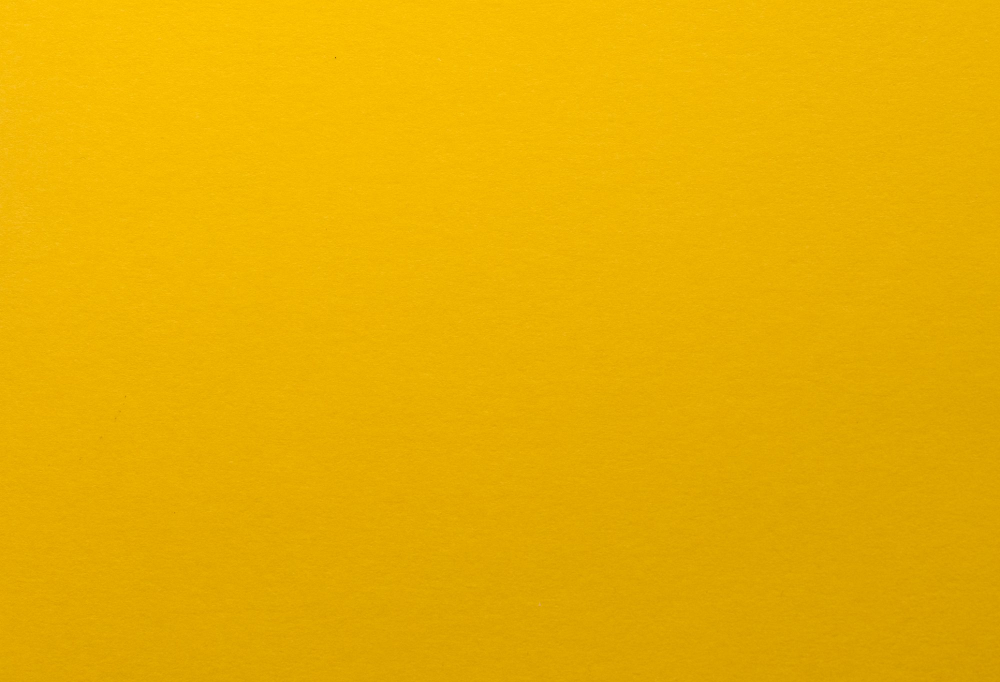
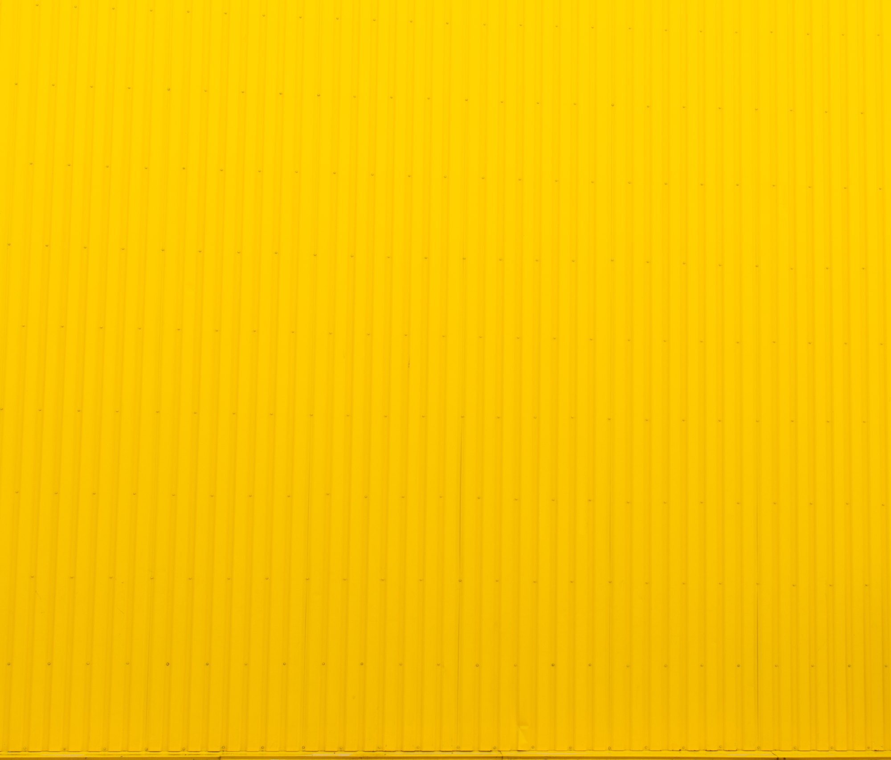
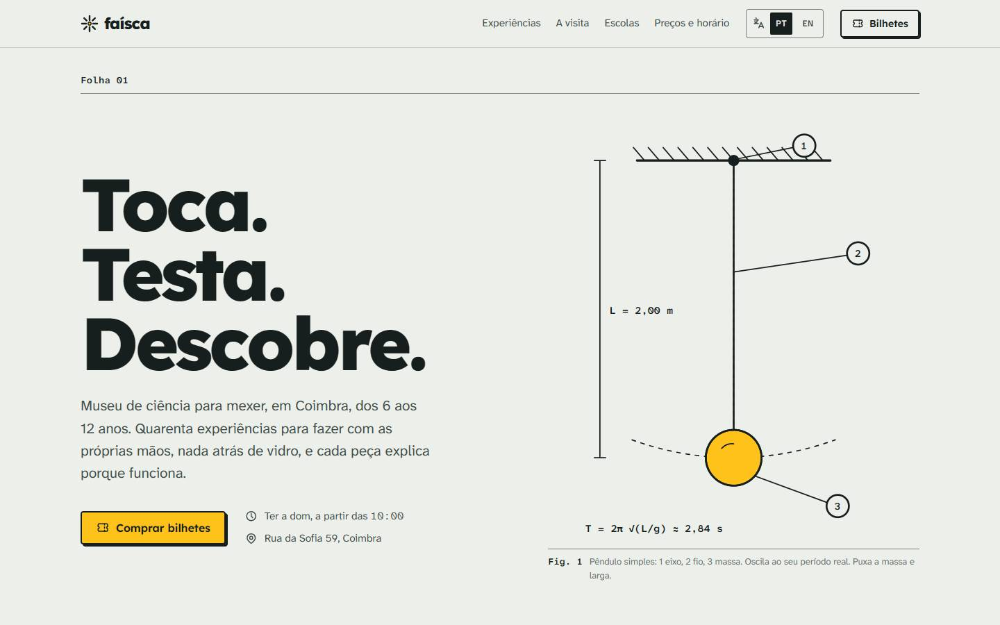
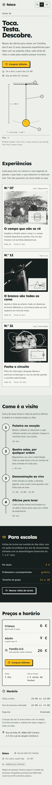
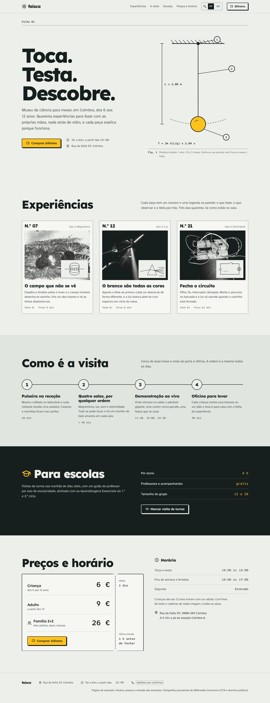

Horizontal, a principal
Folha 00Faísca, museu de ciência para mexer
Folha 01Conceito
Para famílias e escolas de Coimbra, a Faísca é o museu onde cada peça se faz com as mãos e se explica numa frase, como uma folha de experiência que se leva para casa.
Folha 02Público, arquétipo, voz
Leitura da identidade; a validar com o museu.
O Explorador, com o método do Sábio
Curioso e metódico. Convida a experimentar e mostra o passo seguinte; nunca grita, nunca infantiliza.
Verbos no imperativo, frases curtas, uma ideia por frase. O número é sempre um número real.
Folha 03Construção do símbolo
Folha 04Sistema de assinatura
Horizontal, a principal
Vertical
Símbolo sozinho, a partir de 16 px
Uma cor, para carimbo e fax
Invertida, sobre tinta
Área livre: um núcleo (26) em volta
Tamanho mínimo
Usos incorretos
Folha 05Cor e letra
O amarelo gasta-se uma vez: no botão do bilhete, na massa do pêndulo, no núcleo do símbolo. Tinta sobre papel dá 15,6 : 1; tinta sobre amarelo, 11,4 : 1.
Lexend 800, títulos
Toca. Testa.
Atkinson Hyperlegible Next, texto
Espalha a limalha sobre o íman e o campo invisível desenha-se sozinho.
Atkinson Hyperlegible Mono, dados
10:00 às 18:00 · N.º 07 · 2,84 s
Folha 06Aplicações
Folha de experiência, para levar

Caneca de esmalte da oficina

Capa de cartolina do guião do professor

Fachada pintada, Rua da Sofia
Folha 07O site

1440 px, em repouso

390 px

A página inteira, ao vivo. Abrir o site.
Folha finalFaísca, Coimbra
Nada atrás de vidro.
Museu de ciência para mexer, dos 6 aos 12 anos.
Rua da Sofia, Coimbra. De terça a domingo.
Lexend e Atkinson Hyperlegible. Ícones Tabler. Fotografias de domínio público.
Folha 01Coimbra
Toca.
Testa.
Descobre.
Folha 07Magnetismo
Puxa a massa
e larga.